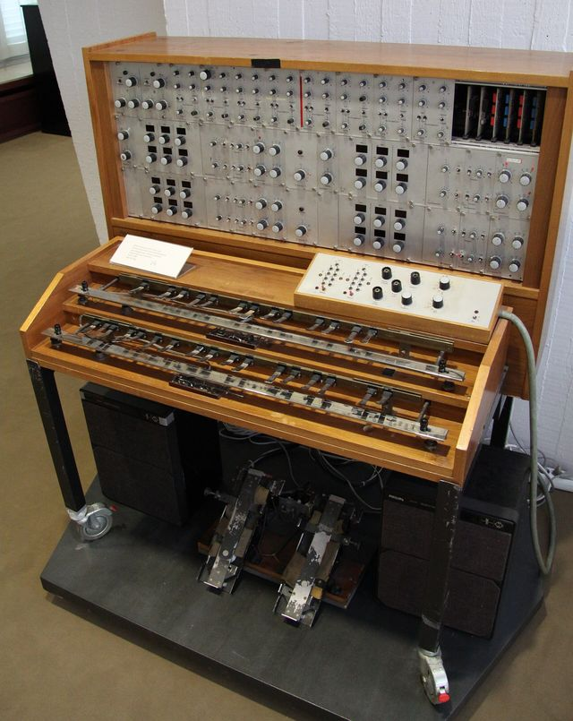

Scheda 013 · 1930 · Berlino
Trautonium
Gli uccelli di Hitchcock non sono uccelli: sono questa macchina
Niente tasti: un filo teso sopra una barra di metallo, e il dito che sceglie la nota.
- ANNO
- 1930
- ORIGINE
- Berlino
- TASTIERA
- Nessuna: un filo
- VENDUTI
- Poche centinaia
La macchinaChe cos'è
Una cassa di legno con sopra un filo teso su una barra metallica. Si preme il filo con il dito: dove lo premi, quella è la nota. Non ci sono tasti, quindi non ci sono note fisse — il quarto di tono, il glissando e il vibrato non sono effetti, sono il modo normale di suonarlo. La Telefunken provò a venderne una versione domestica dal 1933, il Volkstrautonium: ne uscirono poche centinaia e fu un fiasco. Trautwein lasciò perdere.
Chi l'ha costruitaFriedrich Trautwein
Trautwein lo costruisce nel 1930 alla Rundfunkversuchsstelle, il laboratorio di radio e musica della Musikhochschule di Berlino. Paul Hindemith ci scrive sopra dei pezzi e lo porta in concerto; un suo allievo di composizione, Oskar Sala, se ne innamora, va a studiare fisica per capirlo meglio e ci passerà i settant'anni successivi. Nel 1948 lo trasforma nel Mixtur-Trautonium, che a differenza dell'originale può suonare più voci insieme.
Come funzionaCosa c'è dentro
Il filo è una resistenza. Premendolo contro la barra si chiude il circuito in quel punto preciso: più avanti premi, meno resistenza, più alta la nota. La pressione del dito, in più, regola il volume. La trovata di Sala sono le subarmoniche: invece di sommare multipli della frequenza fondamentale, come fa qualsiasi organo, il Mixtur ne genera le frazioni. È un modo di costruire il timbro che non assomiglia a niente — e infatti il risultato non assomiglia a niente.
Chi l'ha usataNei dischi
- Paul HindemithCi scrisse un concerto e dei trii: fu lui a portarlo in sala da concerto
- Oskar SalaFisico e compositore: di fatto l'unico al mondo che sapesse suonarlo
- Alfred Hitchcock«Gli uccelli» (1963): nessuna colonna sonora, solo questa macchina
Da ascoltare
Alfred Hitchcock, «Gli uccelli» (1963)
Non c'è musica in tutto il film: ogni stridio e ogni battito d'ali è questa macchina.
L'aneddotoUna storia
«Gli uccelli» di Hitchcock non ha colonna sonora. Non una nota: Bernard Herrmann, il compositore di tutti i suoi film, compare nei titoli solo come «consulente del suono». Ogni stormire, ogni stridio, ogni ala che sbatte è Oskar Sala a Berlino, sul suo Mixtur-Trautonium, insieme a Remi Gassmann. Hitchcock quello strumento lo aveva sentito da giovane alla radio tedesca e se l'era ricordato per trent'anni.
Avvertenze
Non ha tasti. Ogni nota stonata è esattamente dove l'avete messa.
Il carosello
Le 6 tavole
Da dove viene
Fonti
- «Trautonium» — Wikipedia (EN) verificata il 2026-08-27
- «Oskar Sala» — Wikipedia (EN) verificata il 2026-08-27
- «The Birds» (suono e musica) — Wikipedia (EN) verificata il 2026-08-27
- «How the Bird Sound Effects in The Birds Were Created» — Open Culture verificata il 2026-08-27
Foto: Morn the Gorn · CC BY-SA 3.0 · Wikimedia Commons